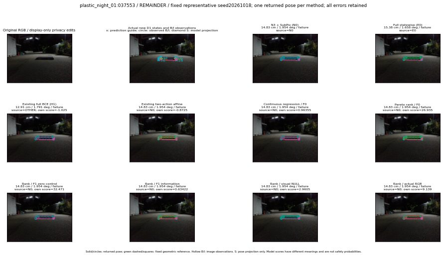

실선은 반환 자세, 초록 점선은 고정 기하 참조입니다. S는 영상 관측이 아닙니다. 점수는 모델별 의미가 다르며 보정된 안전 확률이 아닙니다. 개인정보 처리는 표시 사본에만 적용했습니다.
| 방법·seed | 위치 / 회전 / 공동성공 | 실제 출처 | 선택 후보 | 각 모델 자체 점수 |
|---|---|---|---|---|
| N0 | 14.83 cm / 1.954 deg / failure | N0 | N/A | N/A |
| E0 | 15.38 cm / 1.658 deg / failure | E0 | N/A | N/A |
| E0_REGENERATED | 15.38 cm / 1.658 deg / failure | E0 | E0_REGENERATED | N/A |
| POSEFIX_SUBPIX_PF_ANCHOR | 14.12 cm / 1.83 deg / failure | OTHER | N/A | N/A |
| POSEFIX_SUBPIX_YOLO_ANCHOR | 14.12 cm / 1.83 deg / failure | OTHER | N/A | N/A |
| D1_H1_MLP_s20261018 | 12.91 cm / 1.791 deg / failure | OTHER | WD0/ORIGINAL_WD/selected | -1.025048017501831 |
| D1_H1_MLP_s20261019 | 12.91 cm / 1.791 deg / failure | OTHER | WD0/ORIGINAL_WD/selected | -1.2330889701843262 |
| D1_H1_MLP_s20261020 | 12.91 cm / 1.791 deg / failure | OTHER | WD0/ORIGINAL_WD/selected | -1.353425145149231 |
| D1_H1_PAIR_MLP_s20261018 | 14.83 cm / 1.954 deg / failure | N0 | N0 | -1.5368726253509521 |
| D1_H1_PAIR_MLP_s20261019 | 14.83 cm / 1.954 deg / failure | N0 | N0 | -1.536680817604065 |
| D1_H1_PAIR_MLP_s20261020 | 14.83 cm / 1.954 deg / failure | N0 | N0 | -1.3764008283615112 |
| D1_H1_PAIR_ROLE_AFFINE_s20261018 | 14.83 cm / 1.954 deg / failure | N0 | N0 | -0.8724954128265381 |
| D1_H1_PAIR_ROLE_AFFINE_s20261019 | 14.83 cm / 1.954 deg / failure | N0 | N0 | -1.0766644477844238 |
| D1_H1_PAIR_ROLE_AFFINE_s20261020 | 14.83 cm / 1.954 deg / failure | N0 | N0 | -0.8916022777557373 |
| R_CONT_F0_s20261018 | 14.83 cm / 1.954 deg / failure | N0 | N0 | 0.9635536670684814 |
| R_CONT_F0_s20261019 | 14.83 cm / 1.954 deg / failure | N0 | N0 | 0.8963260650634766 |
| R_CONT_F0_s20261020 | 14.83 cm / 1.954 deg / failure | N0 | N0 | 0.8652859330177307 |
| R_ORDER_F0_s20261018 | 14.83 cm / 1.954 deg / failure | N0 | N0 | 26.9354305267334 |
| R_ORDER_F0_s20261019 | 14.83 cm / 1.954 deg / failure | N0 | N0 | 23.84185028076172 |
| R_ORDER_F0_s20261020 | 14.83 cm / 1.954 deg / failure | N0 | N0 | -10.653306007385254 |
| R_ORDER_F1_ZERO_s20261018 | 14.83 cm / 1.954 deg / failure | N0 | N0 | 32.471004486083984 |
| R_ORDER_F1_ZERO_s20261019 | 12.91 cm / 1.791 deg / failure | OTHER | WD0/ORIGINAL_WD/selected | 44.578060150146484 |
| R_ORDER_F1_ZERO_s20261020 | 14.83 cm / 1.954 deg / failure | N0 | N0 | 21.830059051513672 |
| R_ORDER_F1_s20261018 | 14.83 cm / 1.954 deg / failure | N0 | N0 | 0.6342164278030396 |
| R_ORDER_F1_s20261019 | 14.83 cm / 1.954 deg / failure | N0 | N0 | 8.002386093139648 |
| R_ORDER_F1_s20261020 | 14.83 cm / 1.954 deg / failure | N0 | N0 | 0.436894953250885 |
| V_ORDER_NULL_s20261018 | 14.83 cm / 1.954 deg / failure | N0 | N0 | 2.9604756832122803 |
| V_ORDER_NULL_s20261019 | 14.83 cm / 1.954 deg / failure | N0 | N0 | 2.9011566638946533 |
| V_ORDER_NULL_s20261020 | 14.83 cm / 1.954 deg / failure | N0 | N0 | 9.391983985900879 |
| V_ORDER_RGB_s20261018 | 14.83 cm / 1.954 deg / failure | N0 | N0 | 9.138967514038086 |
| V_ORDER_RGB_s20261019 | 14.83 cm / 1.954 deg / failure | N0 | N0 | 2.6782479286193848 |
| V_ORDER_RGB_s20261020 | 14.83 cm / 1.954 deg / failure | N0 | N0 | -6.500972747802734 |